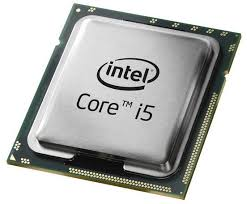
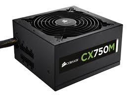
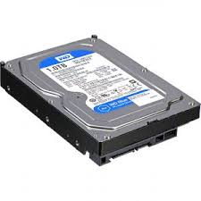
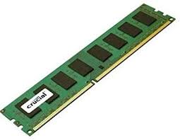
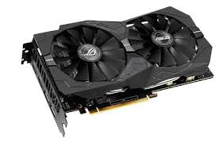
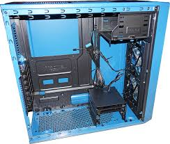

Korelis PC-en er byggd opp
Ein datamaskin er bygd opp av mange forskjellige deler/enheter, som er vist nedenfor.
CPU/Prossessor

Prossessoren blir og rekna som hjernen av datamaskinen og får alle enhetene til å synkronisera, er og det fyrste me plasserer inni dataen, det er 2 typer cpu Intel og Amd.
Strømforsyning

Strømforsyningen gjer slik at alle enhetene får strøm so dei kan fungere.
Harddisk

Harddisken er den enheten som tar vare på opplysningene og data og kjem i 2 typer fysiske størrelser 2.5 tommer og 3.5 tommer
RAM

RAM er umiddelbar hukommelse som datamaskinen bruker til å kjøre prossersser og applikasjoner, RAM står får Random Access Memory, når datamaskinen blir slått av blir RAMen sletta.
Skjermkort

Skjermkort gjer slik at du kan koble til ein skjerm, dess bedre skjem kort du har jo finere bilder får du på skjermen din, men du må også ha ein skjerm som klarer å vise bildene
Kabinett

Kabinett bruke for å halde alle enhetene saman, og beskytter det som er inni
Gå her og der
Heimeside
Interesser
Heimstad